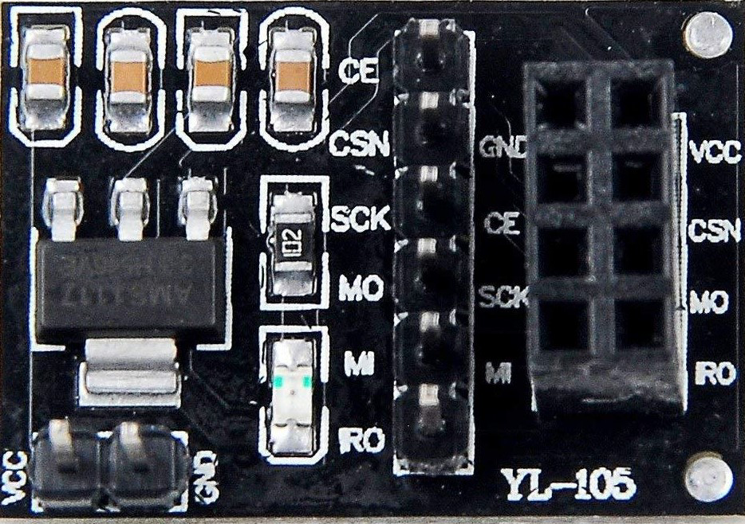

Bygg din egen nødradio
Kallenavn. Boksen din har et kallenavn. Radioen bruker kallenavnet til å finne riktig mottaker. Du skriver de to kallenavnene inn i koden i Leksjon 1 og i Leksjon 2.
Slik bruker du arket. Gjør stegene i rekkefølge. Sett et kryss i ruten når steget er gjort. Linjen «Du ser» forteller hva som skal skje. Ser du noe annet, se tabellen etter steget.
| Leksjon | Du gjør | Tid |
|---|---|---|
| 1. Bygg og test | Kobler radio, buzzer og knapper. Tenner skjermen til partneren. | ca. 50 min |
| 2. Snakk sammen | Kobler potmeteret. Sender tekst fra PC-en. | ca. 25 min |
| 3. Uten PC | Skriver og sender tekst med potmeteret og knappene. | ca. 25 min |
Leksjon 1: Bygg og test
Kodefil:Leksjon1_RadioTest.ino1A. Monter boksen
- Sett Arduinoen i boksen. Fest den med T-pluggene.
- Sett koblingsbrettet (breadboard) i boksen. Snu det slik at den blå linjen er nederst.
- Sett radioen (NRF24L01) i adapteren (HW-200).
- Sett adapteren i antenneholderen.
1B. Koble radioen
| Adapter | Arduino |
|---|---|
| VCC | 5V |
| GND | GND |
| CE | Pin 9 |
| CSN | Pin 10 |
| SCK | Pin 13 |
| MISO | Pin 12 |
| MOSI | Pin 11 |
| IRQ | Ikke i bruk |

- Koble de sju kablene fra adapteren til Arduinoen. Bruk tabellen.
- Sjekk hver kabel en gang til mot tabellen.
1C. Koble buzzer og knapper

- Koble GND fra Arduinoen til den blå linjen på koblingsbrettet.
- Koble buzzeren: + til pin 3, − til den blå linjen (GND).
- Koble Knapp A: ett ben til pin 2, det andre benet til GND.
- Koble Knapp B: ett ben til pin 4, det andre benet til GND.
- Potmeteret (den vridbare med grønn ledning på bildet) kan du vente med til Leksjon 2.
- Koble USB-kabelen fra Arduinoen til PC-en.
1D. Hent koden
- Gå til github.com/Vgsjovik/TeknaRadio.
- Klikk Code, og så Download ZIP. Pakk ut ZIP-filen.
- Åpne
Leksjon1/Leksjon1_RadioTest/Leksjon1_RadioTest.inoi Arduino IDE. - Velg kort: Tools → Board → Arduino UNO R4 WiFi.
- Finner du ikke kortet? Installer Arduino UNO R4 Boards i Tools → Board → Boards Manager.
- Velg port: Tools → Port. Porten heter
/dev/cu.usbmodem…på Mac. - Installer to biblioteker. Gå til Tools → Manage Libraries. Søk opp hvert navn og klikk Install:
- RF24 (av TMRh20)
- ArduinoGraphics
1E. Skriv inn kallenavnene
Øverst i koden står disse to linjene:
#define KALLENAVN "ALFA" #define PARTNER "BRAVO"
- Bytt
ALFAmed kallenavnet i rute 1. - Bytt
BRAVOmed kallenavnet i rute 2. - Sjekk at anførselstegnene står igjen. Linjene skal se slik ut:
#define KALLENAVN "rute 1" #define PARTNER "rute 2"
Store og små bokstaver gir samme resultat. - Klikk Upload (pilen øverst til venstre). «Done uploading» nederst i Arduino IDE. Ingen røde feilmeldinger.
1F. Sjekk oppstarten
Boksen tester seg selv hver gang den starter. Trykk reset for å se testen en gang til. Reset-knappen er den hvite, flate knappen ved USB-kontakten.
- Se på skjermen på boksen. V og 1 pip. Radioen svarer. K og 2 pip. HUB hører deg.
- Se på tavla. En hake ved kallenavnet ditt under «HUB hører deg».
- Åpne Tools → Serial Monitor. Velg 9600 baud. «Kallenavn:» og «Partner:» med navnene fra rute 1 og 2.
- Vent til partneren også har fått K. Se på tavla. En hake under «Godkjent kallenavn». Den kommer bare når dere har skrevet hverandres kallenavn.
| Du ser | Betyr | Gjør dette |
|---|---|---|
| X | Radioen svarer ikke. | Sjekk de sju kablene til radioen. Boksen prøver på nytt hvert sekund. Den viser V når kablene er riktige. |
| ? og 3 pip | HUB hører deg ikke. | Si fra til kursholderen. Knappene virker likevel. |
| NAVN? ruller | Kallenavnet finnes ikke, eller de to kallenavnene er like. | Sjekk 1E. Serial Monitor viser alle gyldige kallenavn. |
Rød feil om ArduinoGraphics.h | Biblioteket mangler. | Installer ArduinoGraphics (1D, steg 6). |
| Ingen hake under «Godkjent kallenavn» | Ett av kallenavnene i koden er feil. | Sammenlign «Partner:» i Serial Monitor hos deg og hos partneren. |
1G. Bruk knappene
- Trykk Knapp A. Hos deg: et kort klikk. Hos partneren: hele skjermen lyser, og buzzeren spiller en stigende melodi.
- Trykk Knapp B. Skjermen hos partneren slukker. Buzzeren spiller en synkende melodi.
- La partneren tenne og slukke skjermen din.
- Trykk Knapp A og Knapp B mens du ser på tavla. Skriv ned hva tavla viser:
Spørsmål
Boksen viste K fordi HUB sendte en kvittering. Fikk du en kvittering da du tente skjermen til partneren? Hvordan vet du at partneren fikk beskjeden?
Leksjon 2: Snakk sammen
Kodefil:Leksjon2_Nodradio.inoAlt fra Leksjon 1 blir stående. I denne leksjonen kobler du potmeteret og laster opp en ny kodefil. Du bruker den samme filen i Leksjon 3.
2A. Koble potmeteret
- Koble midtbenet på potmeteret til pin A0.
- Koble det høyre benet til 5V.
- Koble det venstre benet til GND.
2B. Last opp den nye koden
- Åpne
Leksjon2/Leksjon2_Nodradio/Leksjon2_Nodradio.inofra den samme ZIP-filen.
- Bytt
ALFAmed kallenavnet i rute 1. ByttBRAVOmed kallenavnet i rute 2.#define KALLENAVN "rute 1" #define PARTNER "rute 2"
- Klikk Upload.
V, så K på skjermen. Så
__og ett tegn til høyre. - Åpne Serial Monitor. Velg 9600 baud og New Line. «Kallenavn:» og «Partner:». Trykk reset hvis Serial Monitor er tom.
2C. Send en melding
- Skriv
Hvordan går det?i feltet øverst i Serial Monitor. Trykk Enter. 1 pip og «[Sendt til …]» i Serial Monitor. - Spør partneren hva skjermen viser. Hos partneren: 1 pip, og meldingen ruller over skjermen med kallenavnet ditt foran.
- Se på fanen «Samtaler» på tavla. Kallenavnet ditt, «til», kallenavnet til partneren, og teksten.
- Vent på svar fra partneren. Svaret ruller over skjermen din.
- Trykk Knapp B for å se den siste meldingen en gang til.
2D. Prøv dette
- Skriv en melding med mer enn 28 tegn. Send den. Hva skjer?
- Før du sender: hvem tror du får meldingen
@alle Hei fra meg?Send meldingen. Hadde du rett? - Skriv
@og kallenavnet til en annen boks enn partneren. Skriv så en melding. Send den. Kom den fram?
| Du ser | Betyr | Gjør dette |
|---|---|---|
| N | Kallenavnet finnes ikke, eller de to kallenavnene er like. | Sjekk 2B. Serial Monitor viser alle gyldige kallenavn. |
| Ingenting skjer når du trykker Enter | Serial Monitor sender ikke linjeskift. | Velg New Line i menyen i Serial Monitor. |
| Tegn som skifter av seg selv | Potmeteret er ikke koblet riktig. | Sjekk 2A. Midtbenet skal gå til A0. |
| ? og 3 pip | HUB hører deg ikke. | Si fra til kursholderen. Meldingene virker likevel. |
Spørsmål
1. Alle bokser hører alle meldinger. Hvorfor viser ikke skjermen din meldingene til de andre?
2. Tavla viser alle meldingene i rommet. Hvem kan lese det du sender? Hva betyr det for en ekte nødradio?
Leksjon 3: Uten PC
Kodefil: den samme som i Leksjon 2Du laster ikke opp ny kode. Boksen virker uten PC. Du skriver med potmeteret og knappene.
3A. Slik skriver du
Skjermen viser tre tegn: de to siste tegnene i meldingen din, og tegnet potmeteret står på (lengst til høyre). Et mellomrom vises som _.
| Du gjør | Boksen gjør |
|---|---|
| Drei potmeteret | Tegnet lengst til høyre skifter. |
| Trykk Knapp A | Legger tegnet til i meldingen. 1 pip. |
Drei til tegnet < og trykk Knapp A | Sletter det siste tegnet. En dyp tone. |
| Trykk Knapp B | Sender meldingen til partneren. Viser > og gir 2 pip. |
| Trykk Knapp B uten å skrive noe | Viser den siste mottatte meldingen en gang til. |
| Vent i 5 sekunder | Hele meldingen din ruller over skjermen. |
Potmeteret har tegnene i denne rekkefølgen: <, A til Z, mellomrom, 1 til 9, mellomrom. En melding har maks 28 tegn.
3B. Test
- Drei potmeteret sakte fra den ene enden til den andre. Tegnet lengst til høyre går gjennom alle tegnene.
- Skriv
HEImed potmeteret og Knapp A. - Legg til ett tegn for mye. Slett det med
<. - Trykk Knapp B. > og 2 pip. Meldingen ruller hos partneren og står på tavla.
- Vent på svar fra partneren. Trykk Knapp B for å se svaret en gang til.
- Koble USB-kabelen fra PC-en. Koble den til en powerbank eller en USB-lader. V og K, så skrivevisningen. Alt virker som før.
- Send en melding til partneren uten PC.
Spørsmål
1. Noen bokstaver er lette å treffe med potmeteret. Andre er vanskelige. Hvilke er lette? Hvorfor er koden laget slik?
2. Hvor kan en radio som denne være nyttig?
3. Du kan koble mange typer sensorer til en Arduino. Hva slags informasjon kan være nyttig å sende trådløst fra en enhet til en annen?
Hva betyr tegnet på skjermen?
| Skjermen | Lyd | Betyr |
|---|---|---|
| V | 1 pip | Radioen svarer. |
| X | 2 pip | Radioen svarer ikke. Sjekk kablene. |
| K | 2 pip | HUB hører deg. |
| ? | 3 pip | HUB hører deg ikke. |
| NAVN? eller N | 2 pip | Kallenavnet i koden er feil. |
| Hele skjermen lyser | Stigende melodi | Partneren tente skjermen din (Leksjon 1). |
| > | 2 pip | Meldingen er sendt. Ingen kvitterer, så du vet ikke om den kom fram. |
| Tekst som ruller | 1 pip | En melding til deg. |
Ferdig. Bra jobba!